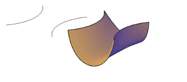

There are two ways to create a 3D object: by extruding or revolving. In addition, you can also rotate a 2D or 3D object in three dimensions. To apply or modify 3D effects for an existing 3D object, select the object and then double-click the effect in the Appearance panel.
There are many software in the market to make 3D objects you want to build
Our recommanded software is hereIn this lesson, you create 3D objects from 2D objects by lofting. Then you modify and edit the lofted 3D object by shelling. You can create a 3D solid or surface between cross sections (2D profiles) of the object. Lofting creates a solid or surface object that flows through other objects that define its shape. The cross sections that you use when lofting must be open to create a surface or all closed to create a solid. You cannot use a selection set that includes both open and closed objects. To create a surface by lofting a 2D open object (arc)
